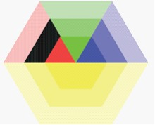
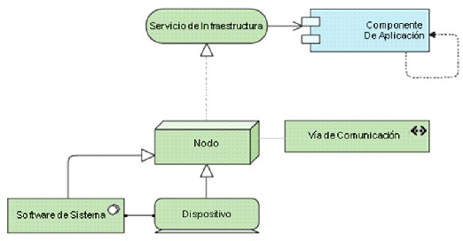

Este punto de vista muestra como las aplicaciones son soportadas por la infraestructura de software y hardware: los servicios de infraestructura son entregados por dispositivos; el software del sistema y las redes proveídos a las aplicaciones. Juega un papel importante en el análisis de desempeño y escalabilidad, ya que relaciona la infraestructura física con la lógica de las aplicaciones. Es muy útil para determinar los requerimientos de desempeño y calidad en de infraestructura basado en las demandas de las aplicaciones que la usan.
Tabla: Descripción del punto de vista uso de la infraestructura
|
Punto de vista uso de la infraestructura |
||
|
Stakeholders |
Arquitectos de aplicación e infraestructura, gerentes operativos |
|
|
Intereses |
Dependencias, desempeño, escalabilidad |
|
|
Propósito |
De Diseño |
 |
|
Nivel de Abstracción |
Coherencia |
|
|
Capa |
Capa de Tecnología y aplicación |
|
|
Aspectos |
Comportamiento, estructura |
|
Conceptos y Relaciones
